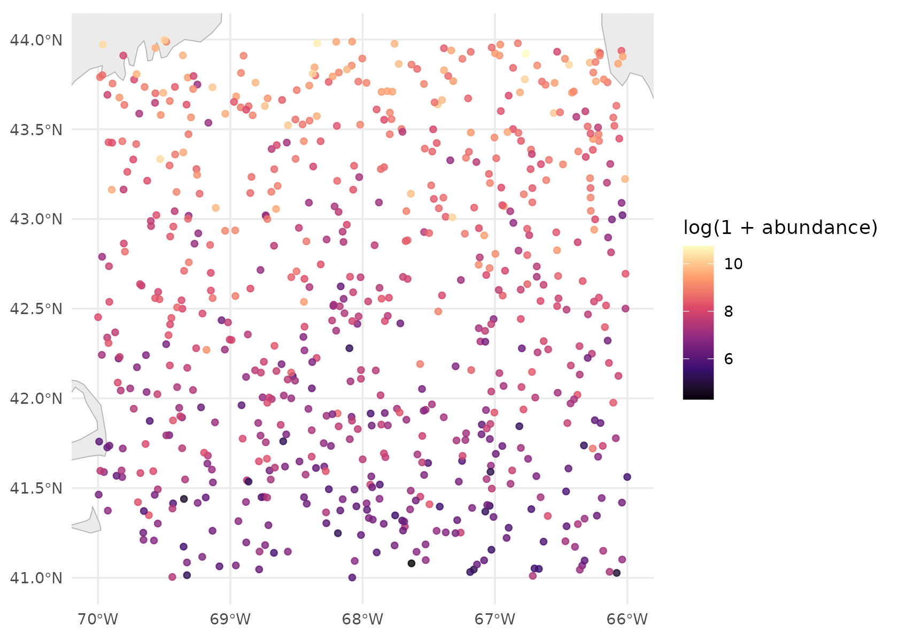
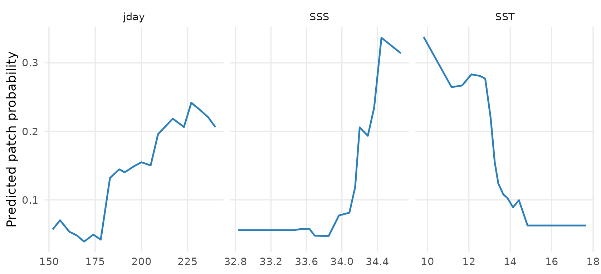
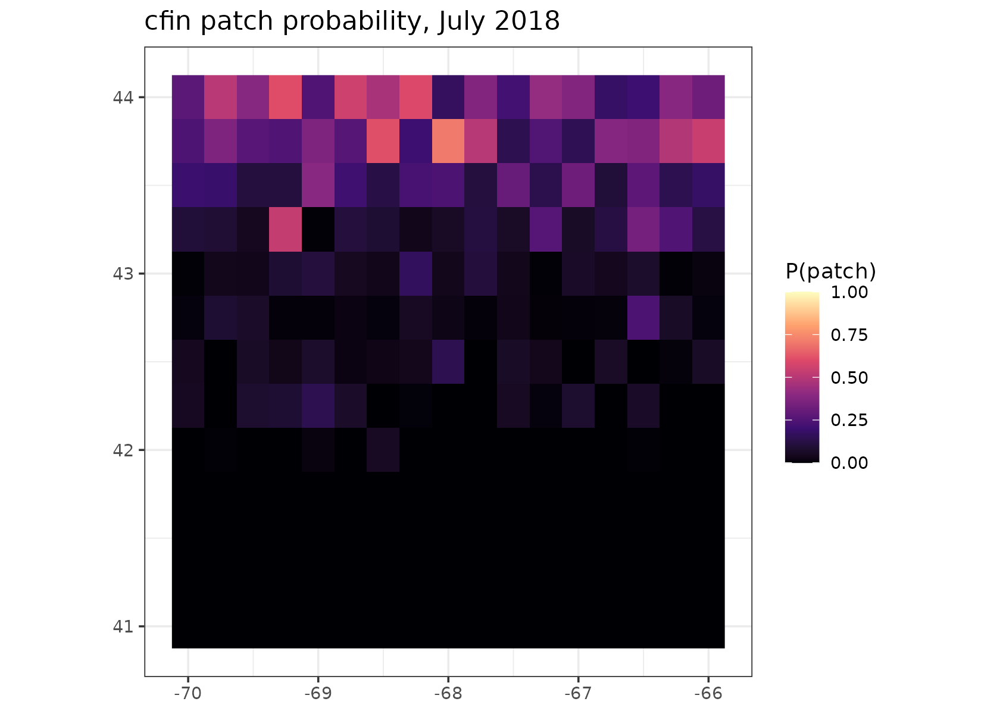

What a run does
taupatch answers one question, monthly, over an area: where are the patches? A patch is a station whose abundance of some zooplankton species exceeds a threshold — the top decile, say, or a stated number of animals per square metre. Everything else is a non-patch.
That turns an abundance survey into a presence/absence problem, which a classifier can be fitted to and a fitted classifier can be projected onto a grid. Five stages, in order:
- Load the station data and label each station patch or non-patch.
- Fetch environmental covariates for the study area and match them to the stations.
- Fit a model of patch probability on those covariates.
- Evaluate it against held-out folds.
- Project it onto the covariate grid, one map per month.
One config file describes all five. Two runs differ by a file rather than by edited code, which is the whole design.
A run you can do right now
The package ships a synthetic dataset and a config that uses it, so
the pipeline can be exercised before you have Copernicus credentials or
a station database. The covariate source is mock: nothing
is downloaded.
config <- load_config(system.file("configs/mock_test.yaml", package = "taupatch"))
# Write into the session's temp directory rather than the installed package.
config$paths$zoop_file <- file.path(tempdir(), "mock_stations.csv")
config$paths$output_dir <- file.path(tempdir(), "taupatch_vignette")
generate_mock_zoop_data(config)load_config() has already done more than read the file.
It applied the defaults, resolved every relative path against the
config’s own location, and checked what is cheap to check: that the
species resolves, the thresholds are well formed, the covariate names
exist, and the columns it declares are actually in the CSV. A mistyped
covariate is an error here, at no cost, rather than five minutes into a
Copernicus download.
Now run it.
result <- run_taupatch(config)That is the whole pipeline. On real data the same call takes as long as the downloads do; here it takes a couple of seconds.
Look at the stations first
Before reading any model output, look at what it was fitted on. This is the step that catches a study area drawn wider than the survey, or an abundance field that is mostly zeros.
station_summary(result$data)
#> quantity value
#> 1 Stations 684
#> 2 Years 2018 to 2019
#> 3 Months sampled 6, 7, 8
#> 4 Longitude -70 to -66
#> 5 Latitude 41 to 44
#> 6 Median abundance 2326
#> 7 90th percentile 9573
#> 8 Maximum 46160
#> 9 Zero or absent 0%Median abundance and the 90th percentile are the two numbers to check against each other. The config asks for a 90th-percentile threshold, so that second number is the patch threshold, and roughly a tenth of stations are patches by construction. Hold on to that — it decides how the evaluation has to be read.
plot_station_map(result$data)
What came back
run_taupatch() returns the fitted model, the
projections, and the data behind both.
names(result)
#> [1] "config" "data" "model" "projections"
#> [5] "covariate_means" "jackknife" "covariates"
names(result$model)
#> [1] "workflow" "metrics"
#> [3] "evaluation" "predictions"
#> [5] "classification_threshold" "classification_threshold_interval"
#> [7] "importance" "ensemble"
#> [9] "type" "model_data"
#> [11] "predictors" "threshold"Which covariates mattered
result$model$importance
#> # A tibble: 3 × 2
#> variable importance
#> <chr> <dbl>
#> 1 SST 0.130
#> 2 jday 0.126
#> 3 SSS 0.108Importance here is the drop in ROC AUC when a predictor is shuffled, averaged over several shuffles. It is computed the same way whichever model type was fitted, which is what makes a random forest’s ranking comparable with a GAM’s — engine-reported importances are not, since ranger’s permutation drop and xgboost’s split gain are different quantities on different scales.
It says a predictor matters. It does not say what it does.
What each covariate does
effects <- partial_effects(result$model$workflow,
result$model$model_data,
result$model$predictors)
plot_partial_effects(effects)
Each panel sweeps one predictor across its range with the others held at the values they actually take, and plots the mean predicted patch probability. The mock data plants a latitudinal gradient and a seasonal cycle into both abundance and the covariates, so these curves should bend — a flat panel on real data means a predictor that is carrying nothing.
Reading the evaluation
This is the part worth slowing down for, because the obvious reading of it is wrong.
result$model$evaluation[, c("metric", "threshold", "value", "std_err",
"lower", "upper")]
#> metric threshold value std_err lower upper
#> 1 roc_auc NA 0.8608983 0.023894825 0.81036985 0.8987184
#> 2 pr_auc NA 0.3689001 NA 0.27015366 0.4977992
#> 3 sens 0.50000000 0.2000000 0.023728947 0.10905594 0.3035908
#> 4 spec 0.50000000 0.9725363 0.009625328 0.95914866 0.9841270
#> 5 tss 0.50000000 0.1725363 NA 0.08051098 0.2775213
#> 6 precision 0.50000000 0.4333333 NA 0.25806452 0.6129653
#> 7 sens 0.04544048 0.8923077 NA 0.71013324 0.9558983
#> 8 spec 0.04544048 0.7205170 NA 0.69357106 0.8801394
#> 9 tss 0.04544048 0.6128247 NA 0.54127301 0.7141987
#> 10 precision 0.04544048 0.2510823 NA 0.20930233 0.4309096Every threshold-dependent metric appears twice, at two cutoffs, and the table says which is which. That is deliberate.
The two uncertainty columns answer different questions, which is why
blanks in one do not mean missing data. std_err is the
spread across cross-validation folds — only the metrics averaged per
fold have one, and pr_auc, tss and
precision come from the pooled held-out predictions
instead. lower and upper bootstrap those
pooled predictions, so every row has an interval: one column asks how
much the number moves when the model is refitted, the other how much it
moves if the survey had sampled different stations.
result$model$classification_threshold
#> [1] 0.04544048
result$model$classification_threshold_interval
#> lower upper
#> 0.04544048 0.20332937That cutoff is estimated from the same held-out predictions it then scores, so it moves too — the interval above is how far, and each bootstrap resample re-derives its own rather than being handed this one. A wide range there means a binarised map depends on which stations happened to be sampled.
At the default 0.5 cutoff the model looks much worse than it
is. With only a tenth of stations patches, a classifier that is
genuinely good at ranking will still put almost every station below 0.5,
so sensitivity reads terribly. Compare the two sens rows
above: the same model, the same predictions, a different number. Use
classification_threshold when you binarise a projection —
it is also written to threshold.yaml next to the
outputs.
ROC AUC flatters an imbalanced problem. Its
false-positive rate has the large non-patch class in the denominator, so
it stays high while precision does not. pr_auc is the
honest companion, and the gap between the two is the thing to watch
(Saito & Rehmsmeier 2015; Sofaer et al. 2019).
The abundance threshold itself — the number of animals a patch starts at — is separate from the probability cutoff, and is recorded too:
result$model$threshold
#> [1] 10000A percentile run can therefore be reproduced later as an absolute one.
The maps
One projection per configured month and year, written as a GeoTIFF and a PNG, and pooled into a single CSV carrying coordinates and dates.
result$projections[, c("year", "month", "n_cells", "n_grid", "resolution")]
#> # A tibble: 6 × 5
#> year month n_cells n_grid resolution
#> <int> <int> <int> <int> <dbl>
#> 1 2018 6 221 221 0.25
#> 2 2018 7 221 221 0.25
#> 3 2018 8 221 221 0.25
#> 4 2019 6 221 221 0.25
#> 5 2019 7 221 221 0.25
#> 6 2019 8 221 221 0.25n_cells against n_grid is the gap report:
how many cells of the covariate grid actually got a prediction. When
they disagree, a covariate was missing there — cloud in the satellite
chlorophyll, or a neighbourhood-derived covariate that is undefined on
the border of the study area. That is what explains a patchy map, and
the run log names the covariate responsible.
The projection is onto the covariate grid at its own resolution, not back onto the station locations, so the map is a surface rather than a scatter of points.
suitability <- readr::read_csv(
file.path(config$paths$output_dir, "projections", "suitability.csv"),
show_col_types = FALSE
)
library(ggplot2)
ggplot(subset(suitability, year == 2018 & month == 7),
aes(lon, lat, fill = suitability)) +
geom_raster() +
scale_fill_viridis_c(option = "magma", limits = c(0, 1), name = "P(patch)") +
coord_quickmap() +
labs(title = "cfin patch probability, July 2018", x = NULL, y = NULL) +
theme_bw()
How far to trust the map
Everything above is a point estimate.
projection.uncertainty adds two layers that say where not
to believe it — off by default, because on a real grid the extra
prediction passes cost real time.
config$projection$uncertainty <- TRUE
config$paths$output_dir <- file.path(tempdir(), "taupatch_vignette_unc")
result <- run_taupatch(config)
suitability <- readr::read_csv(
file.path(config$paths$output_dir, "projections", "suitability.csv"),
show_col_types = FALSE
)
names(suitability)
#> [1] "species" "year" "month"
#> [4] "lon" "lat" "suitability"
#> [7] "suitability_sd" "suitability_lower" "suitability_upper"
#> [10] "novelty" "novel_variable"The models behind the interval are the ones cross-validation already fitted and would otherwise have thrown away, so the ensemble itself is free.
length(result$model$ensemble)
#> [1] 5Two layers, two different questions. suitability_sd and
the interval say how much the surface moves when the model is refitted
on resampled data. novelty says whether the cell is
somewhere the model has ever been:
summary(suitability$novelty)
#> Min. 1st Qu. Median Mean 3rd Qu. Max.
#> -4.951 11.477 30.848 28.266 32.749 96.199
# Which covariate puts a cell outside the training range, where one is.
table(suitability$novel_variable[suitability$novelty < 0])
#>
#> SSS SST
#> 11 2Novelty runs to 100 at the median of the training data and goes negative outside its range — those cells are extrapolation, and the model has no evidence for what it claims there.
Read both, and do not treat a narrow interval as reassurance on its own. Every ensemble member was trained on the same data, so they can walk off the end of it together and agree the whole way. That combination — confident and novel — is the one to look for:
extrapolated <- suitability$novelty < 0
data.frame(
cells = c(sum(!extrapolated), sum(extrapolated)),
median_sd = round(c(median(suitability$suitability_sd[!extrapolated]),
median(suitability$suitability_sd[extrapolated])), 4),
row.names = c("inside training range", "outside training range")
)
#> cells median_sd
#> inside training range 1313 0.0073
#> outside training range 13 0.0589Each month gets a two-panel figure in plots/, and the
layers go into the GeoTIFF beside the mean rather than into a second
file:
What is on disk
list.files(config$paths$output_dir, recursive = TRUE)[1:20]
#> [1] "covariates/monthly_means.csv"
#> [2] "covariates/SSS_heatmap.png"
#> [3] "covariates/SST_heatmap.png"
#> [4] "cv_metrics.csv"
#> [5] "diagnostics/calibration.png"
#> [6] "diagnostics/cv_predictions.csv"
#> [7] "diagnostics/partial_effects.csv"
#> [8] "diagnostics/partial_effects.png"
#> [9] "diagnostics/pr_curve.png"
#> [10] "diagnostics/roc_curve.png"
#> [11] "diagnostics/threshold_performance.png"
#> [12] "evals.csv"
#> [13] "model.rds"
#> [14] "plots/cfin_2018_06_uncertainty.png"
#> [15] "plots/cfin_2018_06.png"
#> [16] "plots/cfin_2018_07_uncertainty.png"
#> [17] "plots/cfin_2018_07.png"
#> [18] "plots/cfin_2018_08_uncertainty.png"
#> [19] "plots/cfin_2018_08.png"
#> [20] "plots/cfin_2019_06_uncertainty.png"model.rds is the fitted workflow, so a projection can be
redone without refitting. diagnostics/cv_predictions.csv
holds the held-out predictions, so any metric not in
evals.csv can be computed without refitting either.
Which covariates are earning their place
Importance ranks the covariates a model has. It cannot say whether a
covariate is carrying anything the others were not already carrying — a
predictor can rank third and be entirely redundant.
jackknife_covariates() answers that by refitting without
each one, over the same folds, and seeing how much worse the model ranks
stations.
It needs no config block; the defaults are used when there is none.
jk <- jackknife_covariates(result$data, config)
jk[, c("variable", "score_full", "score_without", "score_only", "contribution")]
#> variable score_full score_without score_only contribution
#> 1 SSS 0.8667142 0.8581152 0.8139542 0.008598942
#> 2 SST 0.8667142 0.8589691 0.7116931 0.007745092
#> 3 jday 0.8667142 0.8601408 0.6331076 0.006573314Two halves, two questions.
score_without is low when the covariate
carries something no other covariate has — its unique
contribution, which is what contribution measures.
score_only is the model on that covariate
alone, so it is high when the covariate carries a lot whether or not
anything else carries it too.
Read the two columns against each other and the mock run says
something the importance table above could not. jday scores
well on its own — the synthetic data has a real seasonal cycle in it —
and contributes nothing on top of the others, which have absorbed the
same seasonality. That is information which is real and
duplicated, and it is a very different situation from information that
is not there. Ranking on contribution alone would treat the
two identically.
Some contributions come out negative. That means the model scored better on average without the covariate, which on this many stations is noise rather than a finding — and it is exactly the case the test exists to keep you from over-reading.
jk[, c("variable", "contribution", "statistic", "p_value", "p_adjusted",
"significant")]
#> variable contribution statistic p_value p_adjusted significant
#> 1 SSS 0.008598942 0.3020841 0.3888218 1 FALSE
#> 2 SST 0.007745092 0.4276782 0.3454523 1 FALSE
#> 3 jday 0.006573314 0.3926253 0.3573103 1 FALSENothing here is significant, and that is the right answer rather than a broken test. Three covariates over a few hundred synthetic stations, scored on five folds, is not enough evidence to establish that any one of them is load-bearing. A test that returned confident answers from this much data would be the one to distrust.
p_value is one-sided on the per-fold differences, with
the variance inflated to account for the folds sharing most of their
training rows. At five folds that inflation is a factor of 1.5 on the
standard error, so every statistic here is two-thirds of what a naive
paired t-test would have reported. It makes no difference to
the verdict on this run — these differences are nowhere near the
boundary either way — but it is the difference between a real finding
and a false one when a covariate lands close to it, which on real data
is where the interesting ones land. p_adjusted then
accounts for having asked once per covariate. A GLM or a GAM would also
fill in parametric_p with a likelihood ratio test; a forest
has no likelihood, so it is NA here.
Nothing is dropped. That is the default, and it is deliberate:
jackknife_settings(config) # NULL: this config has no jackknife block
#> NULL
# What dropping *would* have removed, under the settings the test ran with.
jackknife_dropped(jk)
#> [1] "jday"Only one name comes back even though all three failed, because
min_predictors floors the model at two covariates and the
ones handed back are the strongest of those that failed.
A covariate that fails this test is one the others already
account for on these stations, which is a statement about
collinearity in this sample at least as much as about ecology. Depth and
surface temperature carry much of the same information on a shelf, and
the test will call either one redundant depending on which the model
reached for first. Turning covariates.jackknife.drop on
tells the pipeline to act on it anyway, and keep protects a
covariate that is in the model because the study is about it:
config$covariates$jackknife <- list(drop = TRUE, keep = "jday", workers = 4)
result <- run_taupatch(config)
result$jackknife # the table, also written to the run
result$config$covariates$exclude # what came outFitting all the models at once
Rather than choosing an algorithm, fit several and combine them. Set
model.type to ensemble and the pipeline does
the rest — everything after the fit works the same, so nothing else in
the config changes.
Four types are available; two are used here because
xgboost and mgcv are suggested rather than
required.
config$model$ensemble <- list(types = c("rf", "glm"), rule = "weighted_mean")
config$paths$output_dir <- file.path(tempdir(), "taupatch_vignette_ens")
result <- run_taupatch(config)
result$model
#> <taupatch ensemble>
#> rule: weighted_mean
#> members (2 of 2 qualifying):
#> type score metric qualifies weight
#> glm 0.6709830 tss TRUE 0.5015792
#> rf 0.6667578 tss TRUE 0.4984208
#>
#> ensemble ROC AUC (out of fold): 0.8987
#> classification threshold: 0.1701Each member’s score, and the weight it earned, is the first thing to read. A table showing one member near 1.0 and the rest near zero is a single model with extra steps.
result$model$summary
#> type label score metric cutoff qualifies weight
#> 1 glm Logistic regression 0.6709830 tss 0.09317055 TRUE 0.5015792
#> 2 rf Random forest 0.6667578 tss 0.16452381 TRUE 0.4984208The ensemble’s evaluation is its own, not the average of its members’. Every member was fitted on the same folds from the same seed, so their held-out predictions line up row for row, and the combined out-of-fold predictions go through the same evaluation as a single model’s:
result$model$evaluation[1:2, c("metric", "value", "lower", "upper")]
#> metric value lower upper
#> 1 roc_auc 0.8986645 0.8626058 0.9271202
#> 2 pr_auc 0.4203016 0.3175984 0.5472320
# Each member's own, for comparison.
vapply(result$model$members,
function(m) m$evaluation$value[m$evaluation$metric == "roc_auc" &
is.na(m$evaluation$threshold)],
numeric(1))
#> rf glm
#> 0.8849567 0.9011302That distinction matters. Combining members that make different mistakes beats all of them; combining members that make the same mistakes does not, and only a cross-validated ensemble prediction can tell those apart.
Importance is weighted across members, with each member’s own kept beside it — a predictor the forest leans on and the GLM ignores is a fact about the shape of the relationship, and the average is the one number that hides it.
result$model$importance
#> # A tibble: 3 × 4
#> variable importance rf glm
#> <chr> <dbl> <dbl> <dbl>
#> 1 SSS 0.263 0.123 0.402
#> 2 jday 0.0737 0.121 0.0264
#> 3 SST 0.0554 0.110 0.000698Every combination rule is computed and written, so a committee map
can be read off the same file without refitting. rule only
picks which one becomes the suitability layer:
names(terra::rast(result$projections$geotiff[1]))
#> [1] "suitability" "suitability_sd" "suitability_lower"
#> [4] "suitability_upper" "algorithm_sd" "algorithm_range"
#> [7] "n_algorithms" "suitability_mean" "suitability_median"
#> [10] "suitability_committee" "member_glm" "member_rf"
#> [13] "novelty"algorithm_sd is the new one, and it is
not the same as suitability_sd from the
section above. That one is a single algorithm refitted on resampled
stations; this one is different algorithms looking at the same stations
and disagreeing. Both can be on at once, and a cell can be quiet on one
and loud on the other:
ens <- readr::read_csv(
file.path(config$paths$output_dir, "projections", "suitability.csv"),
show_col_types = FALSE
)
summary(ens[, c("suitability", "algorithm_sd", "suitability_sd")])
#> suitability algorithm_sd suitability_sd
#> Min. :2.965e-05 Min. :4.910e-06 Min. :0.0001085
#> 1st Qu.:1.692e-03 1st Qu.:1.790e-03 1st Qu.:0.0024286
#> Median :1.662e-02 Median :9.338e-03 Median :0.0121502
#> Mean :9.957e-02 Mean :2.994e-02 Mean :0.0295782
#> 3rd Qu.:1.194e-01 3rd Qu.:3.588e-02 3rd Qu.:0.0468390
#> Max. :7.457e-01 Max. :3.555e-01 Max. :0.2347471Moving to real data
Three things change, and nothing else does.
The station file. Point paths.zoop_file
at your own CSV. If you have the raw NOAA EcoMon export rather than a
formatted database, reshape it first — format_zoop_data()
splits the date, renames the coordinate columns, strips the units off
each taxon column and divides the abundances accordingly, and carries
everything else through untouched.
format_zoop_data("raw_ecomon.csv", write_to = "data/zooplankton.csv")
zoop_taxa("raw_ecomon.csv") # every taxon the file carriesThe covariate source.
covariates.source: copernicus instead of mock,
and the Copernicus
Marine Toolbox installed and logged in. The covariate names stay the
same:
covariate_info()[1:8, c("name", "label", "units", "spatial")]
#> name label units spatial
#> 1 SST Sea surface temperature degrees C 0.083° (~9 km)
#> 2 SSS Sea surface salinity PSU 0.083° (~9 km)
#> 3 BOTT Bottom temperature degrees C 0.083° (~9 km)
#> 4 BOTS Bottom salinity PSU 0.083° (~9 km)
#> 5 UO Eastward current velocity m/s 0.083° (~9 km)
#> 6 VO Northward current velocity m/s 0.083° (~9 km)
#> 7 SSH Sea surface height m 0.083° (~9 km)
#> 8 MLD Mixed layer depth m 0.083° (~9 km)The window and the area. dates,
projection, and study_area.bbox. Draw the
bounding box wider than your stations if you use gradients or fronts,
which are undefined on the edge of the grid.
Write the new config rather than hand-editing YAML —
generate_config() validates as it writes, so a mistyped
covariate is an error at that call:
generate_config("cfin_gom",
zoop_file = "data/zooplankton.csv",
selected = c("SST", "SSS", "CHL"),
bathymetry = "DEPTH",
transform = list(log1p = c("CHL", "DEPTH")))Doing it without writing code
The same pipeline is a GUI. Every config field is a control, the run streams its progress, and Download config turns whatever you clicked into a YAML file you can re-run or hand to someone else.
Where to go next
The README covers each config block in depth — thresholds, derived covariates, transformations, resampling before the join, the four model types and the diagnostics each one contributes. In R:
-
?load_config,?generate_config— the config -
?covariate_info,?derivoce_covariates— what can be a predictor -
?covariate_transforms— and what can be done to one -
?model_types— the four models, and what each is good for -
?partial_effects,?gam_smooth_terms— reading a fitted model -
?jackknife_covariates,?jackknife_settings— testing which covariates earn their place -
?fit_patch_ensemble,?ensemble_settings,?ensemble_rules— combining several model types
Citing a run
taupatch is mostly plumbing between other people’s data and other
people’s methods. A run reaches Copernicus Marine products, NOAA
terrain, and station data none of which belong to this package, and fits
models and metrics that are each somebody’s paper.
citation("taupatch") gives this package and the paper it
implements; the References
section of the README groups everything else so you can pick out the
subset a particular run actually used. Each function’s own help page
carries the references relevant to it.